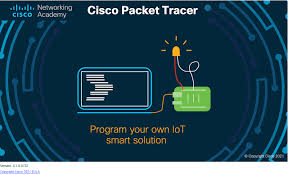

Pre Projeto
O Pre projeto é um projeto que criamos uma rede, onde conectamos os cabos da internet para conectar aos computadores que são em 50 computadores e dividimos em 4 andares. também colocamos internet no local para os mobile (celuares,tabletes e notebook), configuramos o WIFI assim todos tem acesso a internet fizemos o RIP para alinhar os IP´S.